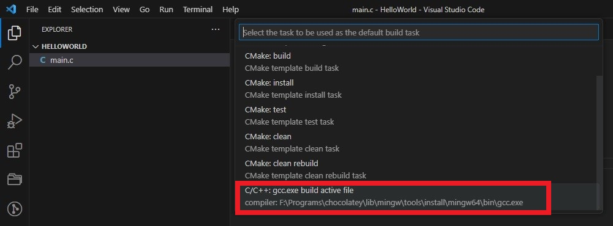

Setup of gcc compiler
C project using gcc
- Create a folder called HelloWorld
-
Add main.c.
#include <stdio.h> #include "mymath.c" int main() { int a = 197; int b = 40; int c = addition(a, b); printf("Sum of %d and %d is %d.", a, b, c); return 0; } -
Add mymath.c.
int addition(int x, int y) { return x + y; } - Click Terminal Run build task. Select C/C++:gcc.exe build active file 
- This will create .vscodefolder. It will add tasks.json
-
Change the content of tasks.jsonas follows
{ "version": "2.0.0", "tasks": [ { "type": "cppbuild", "label": "C/C++: gcc.exe build active file", "command": "F:\\Programs\\chocolatey\\lib\\mingw\\tools\\install\\mingw64\\bin\\gcc.exe", "args": ["-fdiagnostics-color=always", "-g", "${file}", "-o", "${fileDirname}\\${fileBasenameNoExtension}.exe"], "options": { "cwd": "${fileDirname}" }, "problemMatcher": ["$gcc"], "group": { "kind": "build", "isDefault": true }, "detail": "compiler: F:\\Programs\\chocolatey\\lib\\mingw\\tools\\install\\mingw64\\bin\\gcc.exe" }, { "type": "shell", "label": "Run Project", "command": "F:\\Programs\\chocolatey\\lib\\mingw\\tools\\install\\mingw64\\bin\\gcc.exe -fdiagnostics-color=always -g -Wall \"${file}\" -o \"${fileDirname}\\${fileBasenameNoExtension}.exe\" && \"${fileDirname}\\${fileBasenameNoExtension}.exe\"", "options": { "cwd": "${fileDirname}" }, "problemMatcher": ["$gcc"], "detail": "compiler: F:\\Programs\\chocolatey\\lib\\mingw\\tools\\install\\mingw64\\bin\\gcc.exe" } ] }Here we have added custom task Run Project which will first build the project and run the generated exe file.
- To run the custom task, click Terminal Run task. Select Run Project from dropdown.